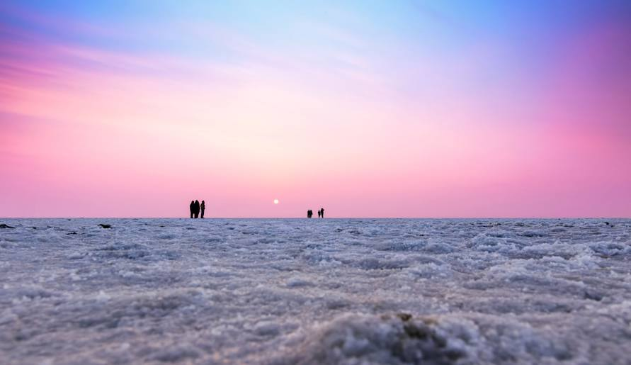
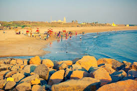
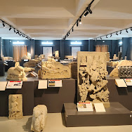

1.Somnath Temple

• Somnath temple(IAST: somanātha) or Deo Patan, is a Hindu temple located in Prabhas Patan, Veraval in Gujarat, India. It is one of the most sacred pilgrimage sites the Tirtha Kshetra for Hindus and is the first among the twelve jyotirlinga shrines of Shiva.[1] It is unclear when the first version of the Somnath temple was built, with estimates varying between the early centuries of the 1st millennium and about the 9th century CE.[2][3] The temple is not mentioned in the ancient Sanskrit texts of Hinduism; while various texts, including the Mahabharata and Bhagavata Purana, mention a tirtha (pilgrimage site) at Prabhas Patan on the coastline of Saurashtra, where the temple is presently located, there is no evidence that a temple existed at the site in ancient times.
2.Rann of Kutch
• The Rann of Kutch is a large area of salt marshes that span the border between India and Pakistan. It is located mostly in the Kutch district of the Indian state of Gujarat, with a minor portion extending into the Sindh province of Pakistan. It is divided into the Great Rann and Little Rann. It used to be a part of the Arabian Sea, but it then dried up, leaving behind the salt, which formed the Rann of Kutch. The Luni flowed into the Rann of Kutch, but when the Rann dried up, the Luni was left behind, which explains why the Luni does not flow into the Arabian Sea today.
3.Gir National Park

• The Gir Forest National Park and Wildlife Sanctuary (also known as Sasan Gir) is a forest and wildlife sanctuary near Talala Gir in Gujarat, India. It is located 43 km (27 mi) north-east of Somnath, 65 km ( 40 mi) south-east of Junagadh and 60 km (37 mi) south west of Amreli. It is the sole home of the Asiatic lion in the world and is considered to be one of the most important protected areas in Asia due to its supported species. The ecosystem of Gir is a mixture of deciduous forest, waterfalls, and scrubland. The park covers 1,412 km2 (545 sq mi) of dry deciduous forest, and is home to 38 species of mammals, 300 species of birds, 37 species of reptiles, and 2,000 species of insects.
4.Somnath Beach
• Somnath Beach is a beach in the town of Somn ath in the Prabhas Patan taluka of Gir Somnath district in the Indian state of Gujarat. It is located on the Arabian Sea coast, 79 km (49 mi ) south of Junagadh and 25 km (16 mi) north of Veraval. The beach is a popular tourist destination, and is known for its sunset views. The beach is also a popular spot for fishing and boating.
5.Somnath Museum
• The Somnath Museum is a museum located in the town of Somnath in the Prabhas Patan taluka of Gir Somnath district in the Indian state of Gujarat. The museum is located in the Somnath Temple complex, and is dedicated to the history and culture of the Somnath region. The museum houses a collection of artifacts and exhibits related to the Somnath Temple, including sculptures, inscriptions, and other historical objects. The museum also has a library and a research center, which are used by scholars and students to study the history and culture of the Somnath region.
Bala Mohan A S -95072215009 - 3rd Year - B.Tech Information Technology - WEB TECHNOLOGY AND ITS APPLICATIONS - 21IT56063